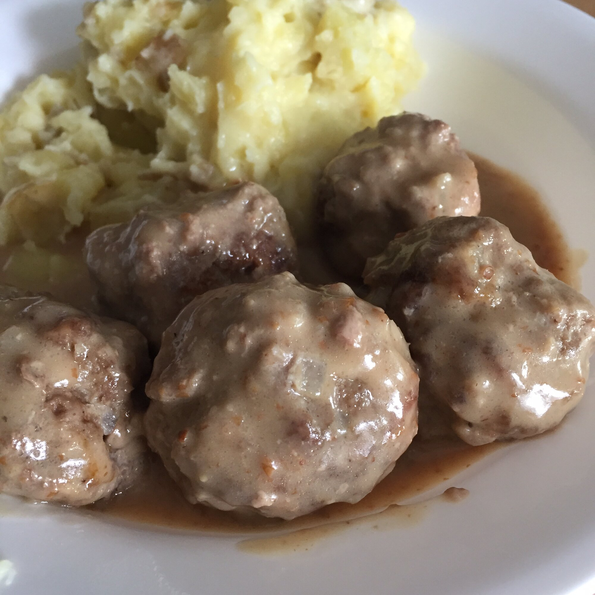

Swedish Meatballs

The Swedish Chefs Delicious Swedish Meatballs
Swedish meatballs, traditionally served with boiled potatoes and lingonberry preserves, are a hearty meal the whole family will love!
Ingredients
Meatballs
- 1 cup fresh bread crumbs
- 3/4 cup milk
- 1 pound lean ground beef
- Half pound lean ground pork
- Half cup finely chopped onion
- Half cup finely chopped fresh parsley
- 1/4 cup finely chopped celery
- 1 large egg, lightly beaten
- 1 teaspoon minced garlic
- 1 teaspoon white sugar
- 1 teaspoon salt
- ½ teaspoon freshly ground black pepper
Sauce
- 3 tablespoons unsalted butter
- 3 tablespoons all-purpose flour
- 2 cups beef broth
- 1 tablespoon Worcestershire sauce
- 1 cup reduced-fat sour cream
- 3 tablespoons chopped fresh dill
- 1/4 teaspoon lemon zest
- salt and ground black pepper to taste
Steps
- Preheat the oven to 350 degrees F (175 degrees C). Line a baking sheet with aluminum foil and place a baking rack on top. Spray the baking rack with cooking spray.
- Combine bread crumbs and milk in a large bowl. Allow bread crumbs to soak up the milk for about 10 minutes. Mix in ground beef, ground pork, onion, parsley, celery, egg, garlic, sugar, salt, and pepper until combined; mixture will be fairly wet. Shape into 36 meatballs with a 1-tablespoon cookie scoop. Place meatballs on the prepared baking rack.
- Bake in the preheated oven until an instant-read thermometer inserted into the center of a meatball reads 160 degrees F (71 degrees C), about 18 minutes.
- While the meatballs are baking, melt butter for sauce in a large saucepan over medium-low heat. Whisk in flour and cook, stirring constantly, for 2 minutes. Gradually whisk in beef broth and Worcestershire sauce until smooth. Cook, stirring often, until slightly thickened, about 12 minutes.
- Remove meatballs from the oven and add to the sauce mixture. Simmer for 3 minutes. Stir in sour cream, dill, and lemon zest. Season with salt and pepper and serve immediately.